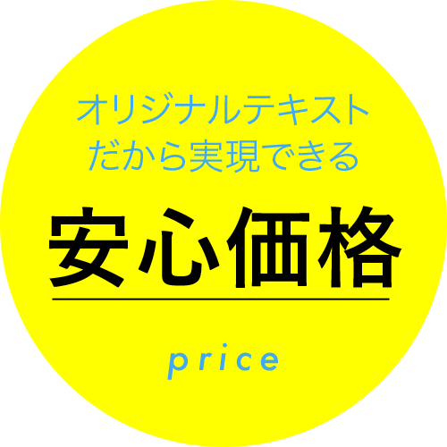
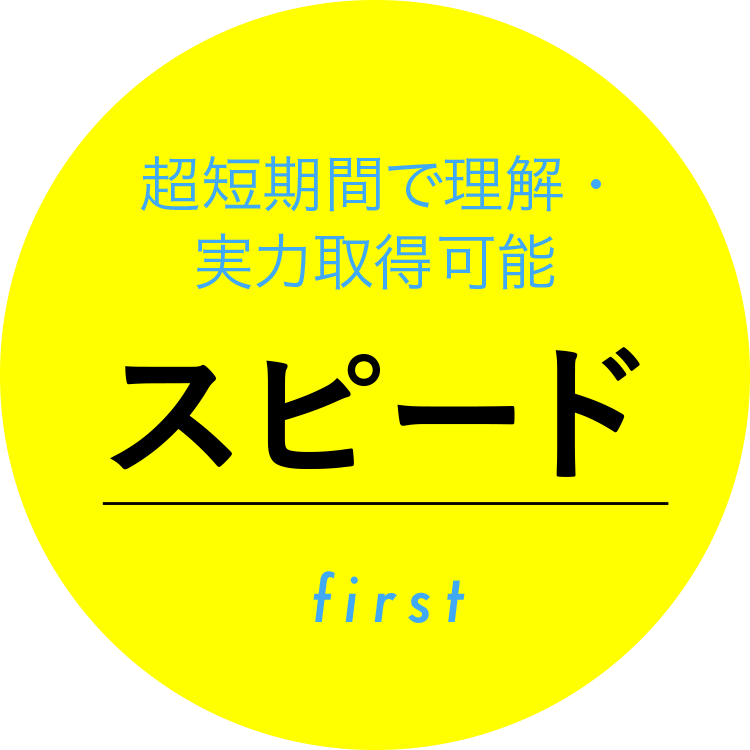

高卒認定受験通信講座
夢を諦めない
貴方に。
30年の実績、◎◎人の合格者排出。
江原予備校の高卒認定受験通信講座


江原予備校の通信講座を
選ぶ理由
Reasonオリジナルテキストだから
実現できる安心価格
他業者を挟まない「完全自社制作」のテキストだから、低料金。
短期間で習得可能
モチベーションを保てる【14日間】で完結できる自社テキスト。過去問につながる中学校の復習から始めるから、立ち止まることなく短期間でも習得可能。
あなたの疑問にお答えします
よくある質問
Q&Aプロ講師がオンラインで指導します
・当校テキストで学習します。・テキストをダウンロードします。・自分で学習することも可能です。 動画で説明しています。・わからないところは プロ講師が直接指導します。
中学範囲からカバーします!
私たちは長年経験を積んできました。これだけやればよいという内容を示すことができます。自信を持ってお勧めします
選べる3つのコース
江原予備校の通信講座は、負担になりづらい低料金！
Course低料金！自分でこつこつ勉強したい方へ
ライトコース
質問指導などもできる人気コース
ベーシックコース
学力に不安のある方・面接指導も万全に
プレミアムコース
| ライトコース | ベーシックコース | プレミアムコース | |
| ①テキスト購入 | ◎ | ◎ | ◎ |
| ②動画視聴 | ◎ | ◎ | ◎ |
| ③LINE質問回答 | 3回/科目 | 10回/科目 | 20回/科目 |
| ④Zoom質問指導 | × | 1科目60分×2回 | 1科目60分×4回 |
| 費用総額 | 1科目7,700円 | 1科目12,100円 | 1科目14,300円 |
※別途テキスト送料がかかります。（1科目530円）
※価格は全て税込です。
テキストの種類
※テキスト費用（1科目7,700円）は上記コース内費用に含まれています。
- 中学復習 数学
- 中学復習 英語
- 高認 数学
- 高認 英語
- 高認 国語
- 高認 世界史
- 高認 日本史
- 高認 地理
- 高認 科学と人間生活
- 高認 生物基礎
- 高認 地学基礎
Zoom個別指導オプション
月額1万円台から！直接指導をご希望される方におすすめです。
| 1科目 | ||
| 1ヶ月 | 60分×4回 | 13,200円 |
必要な知識を確実に身に着ける
勉強の流れ
STUDY FLOW高認を正しく知る！
江原予備校の『高認コラム』
Column「高認」の基礎知識
「高等学校卒業程度認定試験」のことです。
様々な理由から、高校へ進学しなかった方など高校を卒業できなかった方のために用意された、高等学校卒業程度の学力があるかどうかを認定するための試験です。
国語・数学など豊富な科目があります。
1回で全部とれなくても科目合格でき、残った科目だけを2回目にうければ大丈夫なので、8月に何科目落としたとしても11月にそれらの科目を受験すればよいです。
国語・数学など豊富な科目があります。
科目は下の表の通りです。 詳しくは文部科学省HPをご覧ください。
| 教科 | 試験科目 | 科目数 | 要件 |
| 国語 | 国語 | 1 | 必修 |
| 地理・歴史 | 世界史A・世界史B | 1 | 2科目のうちいずれか1科目必修 |
| 日本史A・日本史B | 1 | 4科目のうちいずれか1科目必修 | |
| 地理A・地理B | |||
| 公民 | 現代社会 | 1または2 | ①「現代社会」1科目 ②「倫理」と「政治・経済」の2科目 ※①か②のいずれかが必修 |
| 倫理 | |||
| 政治・経済 | |||
| 数学 | 数学 | 1 | 必修 |
| 理科 | 科学と人間生活 | 2または3 | ①「科学と人間生活」の1科目と「物理基礎」「科学基礎」「生物基礎」「地学基礎」のうち1科目の合計2科目 ②「物理基礎」「科学基礎」「生物基礎」「地学基礎」のうち1科目 ※①か②のいずれかが必修 |
| 物理基礎 | |||
| 化学基礎 | |||
| 生物基礎 | |||
| 地学基礎 | |||
| 外国語 | 英語 | 1 | 必修 |
※高校に行かれていた場合科目が免除されることがあります。詳しくは文部科学省HPをご確認ください
前回試験では「40.6%」でした
★ダミー〇合格者割合 令和2年度ぬ回目 令和2年第1回高認受験者(8月12日13日) 全国出願者約9,206人 全科目合格者3,737人 合格率 40.6%
100点満点中40点以上と思われます。
公式に合格点は発表されていませんが、100点満点中40点以上と思われます。また、解答はマークシート式です。
きちんとした学習と過去問演習が
絶対に必要です。
★文章支給お願いします。★文章支給お願いします。★文章支給お願いします。★文章支給お願いします。★文章支給お願いします。★文章支給お願いします。
当校からの受験者合格率は
10年連続ほぼ100%です。
★文章支給お願いします。★文章支給お願いします。★文章支給お願いします。★文章支給お願いします。★文章支給お願いします。★文章支給お願いします。
科目選択のしかた
大学受験を考える場合
→受験科目と同じ科目を選択しましょう。
まずは高認合格を考える場合
→とりやすい科目を選びましょう。
とりやすい科目
- 現代社会
- 国語
- 数学
- 化学と人間生活
数学が苦手な人は多いですが
当校テキストだけを勉強すれば、中学時点から身につきます！
すこしきつい科目
- 日本史
- 生物基礎
- 政治経済
- 倫理
- 地理
世界史・日本史・地理はAを選択しましょう。
けっこうきつい科目
- 英語
- 世界史
- 物理基礎
- 化学基礎
できれば物理基礎・化学基礎は
大学受験科目と重なっていない限り避けましょう…！
科目別出題傾向
※詳細な試験内容は、文部科学省高卒認定過去問を参考にしてください。
国語
現代文は小説と論説(随筆)が 2題＋古文＋漢文が出題
結構時間がたりないので、設問を見ながら文を読みましょう。選択なので、消去法で得点しましょう。古文は、題名、現代語訳と問題文を先に読みましょう。漢文は、返り点の知識が必要です。
数学
教科書の【例題】の基本部分のみ出題されます。
下記にあるような問題で、傾向はほとんど変わりません。 過去問の傾向を調べてピンポイントで学習しましょう。 無駄な参考書はイラナイ!
英語
1.2.4.5番で点数を稼ぎましょう。6の長文は何とか頑張る。
英語は、高校入試レベルがしっかりしていれば合格できます。 しかし、あいかわらず落としやすい科目NO1です。 1.2の短文のイントネーション問題 3の文法問題は結構難しい。 4.5の適切な単語・文を選ぶのは消去法で何とか取りましょう。 6のグラフを使った長文は、グラフをしっかり見ましょう。
科学と人間生活
問題を選択できるのでラクです。全体の基礎事項を学習せよ。
1.は光2.は熱どちらも基本です。教科書を読みましょう。 3.食品 4.金属 基本ですね。教科書の太字の部分を確認証。 5.生物 6.微生物 傾向を過去問でつかみましょう。 7.宇宙 惑星 8.自然景観 基本です。 いずれも【重要】な部分だけ学習すれば取れます。
生物基礎
問題数が20問で少ないので注意!
1教科書からまんべんなく出ます。 細胞・代謝 ATP →ADP ・酵素の実験・遺伝子3問・人体4問 植生4問 全体をとらえておくことが大切。
化学基礎
問題が20問と少ない。
原子の構造・イオン化エネルギー・同素体・分子量・化学反応式・mol計算・中和基本などまんべんなく出ています。どれも基本です。重要項目を学習しましょう。
地学基礎
問題数20問。全体の基礎事項を学習しましょう。
1.太陽系の誕生 2.太陽系の天体 3. プレートテクトニクス 4.古生物の変遷 5.地球環境 太陽放射 とまんべんなく出題されます。計算は殆どありません。
物理基礎
問題数20問。全体の基礎事項を学習しましょう。
1.力学 投射 2.力のつりあい・運動方程式 3.エネルギー 4..熱計算 5.波動 6.電気 公式を確実に覚えておきましょう。
世界史A
問題は、約30問。できれば世界史Aを選びましょう。
全体からまんべんなく出題されています。 唐・元・明・清 特に始皇帝の兵馬俑 七年戦争・第一次大戦など頻出です。世界史は全体の歴史の流れをつかみましょう。
現代社会
約24問。全体として資料問題。
過去問になれましょう。 資料の問題は、特徴あるところに注目します。 個人情報保護法・エスノセントリズムなど知っておく必要が あります。
日本史A
問題は、約30問。できれば日本史Aを選びましょう。
日本史Aだと開国から現代までしか出ません。 1.2番目の問題は資料から出題されます。 写真の選択問題では、消去法でわりと解けます。 開国・明治維新は条約・大日本国憲法がよく出題されます。 第一次大戦に使用された兵器など資料集を確認しましょう
地理A
問題は、20問。できれば地理Aを選びましょう。
図法・時差は頻出です。しっかり理解しておきましょう。世界の雨温図は注意しておきましょう。後半は資料による問題です。過去問に慣れておきましょう。
江原予備校の
合格体験記
Passing experience
◎◎◎◎◎◎学校 合格
「なんとかかんとかなんとかかんとかなんとかかんとかなんとかかんとかなんとかかんとかなんとかかんとかなんとかかんとかなんとかかんとかなんとかかんとかなんとかかんとかなんとかかん」